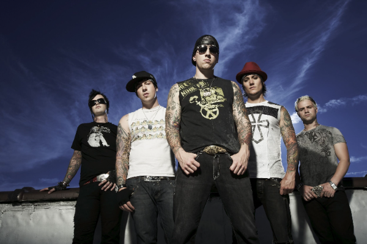

Avengend Sevenfold
Uma banda de heavy metal americana formada em 1999.

Sobre o inicio da banda:
Avenged Sevenfold (também conhecida como A7X) é uma banda norte americana de heavy metal, fundada em 1999 em Huntington Beach, Califórnia. A banda consiste no vocalista M. Shadows, nas guitarras Zacky Vengeance e Synyster Gates, no baixo Johnny Christ e na bateria Brooks Wackerman.
Avenged Sevenfold começou tocando metalcore em seus dois primeiros álbuns, mas após alguns anos a banda mudou seu estilo musical no álbum City of Evil e hoje é considerada uma revelação e um dos maiores nomes do heavy metal dos últimos anos.
Formação da banda:
A banda foi formada por M. Shadows e Zacky Vengeance. Eles eram amigos e estudavam na mesma escola, suas bandas anteriores, Successful Failure e Mad Porn Action (MPA) respectivamente não tinham dado certo. Logo depois de sairem do bronze, investiram em sua nova banda, convidando The Rev (baterista) e Matt Wendt (baixista) para completar a formação...
"Querido Deus, a única coisa que peço a você é que cuide dele enquanto eu não estiver por perto."
- Letra da música dear god
Curiosidades sobre a banda Avenged Sevenfold:
- O nome Avenged Sevenfold significa "Vingados Sete Vezes"
- A banda já vendeu mais de 8 milhões de álbuns em todo o mundo.
- O baterista original, The Rev, faleceu em 2009 devido a uma overdose acidental de drogas.
- Avenged Sevenfold é conhecida por seus videoclipes elaborados e cinematográficos.
- A banda tem uma base de fãs dedicada conhecida como "A7X Family".
I love you, you were ready
The pain is strong and urges rise
But I'll see you when He lets me
Your pain is gone, your hands untied
So far away (so far away)
And I need you to know
So far away (so far away)
And I need you to, need you to know
So far away - Avenged Sevenfold

Mais informações:
Aqui você pode encontrar mais sobre a banda clique aqui